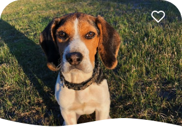
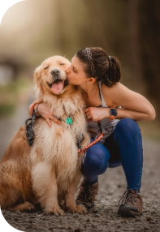
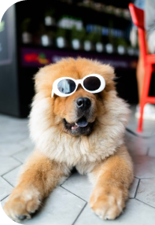

Втратили улюбленого пухнастика?
Не хвилюйтесь! Ми є вашим надійним партнером у пошуку. Разом з нами ви зможете відшукати своїх найкращих друзів і забезпечити їм надійне повернення додому
Хто ми?

Не хвилюйтесь! Ми є вашим надійним партнером у пошуку. Разом з нами ви зможете відшукати своїх найкращих друзів і забезпечити їм надійне повернення додому
-
Швидкий пошук перетримки, який дозволяє знайти необхідну допомогу одразу на нашому сайті
-
Блог, де розташовані цікаві історії, факти та головне, поради по догляду за тваринами
-
Зручна сторінка пошуку, з важливими пунктами для забезпечення скорішого впізнання улюбленця
Нещодавно знайшли
Активно розміщуйте оголошення та здійснюйте репости, прагнучи, щоб якомога більше людей дізналися про ваш пошук улюбленця. Вірте в краще та шукайте вашого пухнастика, а наш веб-сервіс в цьому допоможе
-

Знайдений собака
Коли:
23.04.2023
Стать
Ж
Де:
м. Київ, Вулиця Грушевського
Собака породи бігль, середнього розміру, з окрасом тріколор
-

Знайдена кішка
Коли
10.05.2023
Стать:
Ж
Де:
м. Київ, Вулиця Пушкінська
Маленького розміру з білим окрасом та темними очима
-

Знайдений собака
Коли
1.06.2023
Стать:
Ч
Де:
м. Київ, Вулиця Дегтярівська
Собака породи лабрадор, досить великого розміру з білим хутром
Map
Відгуки
-
Дуже вдячна веб-сервісу за допомогу у пошуку мого загубленого собаки. Завдяки небайдужості людей та ефективним інструментам, я знайшла свого улюбленця протягом двох днів. Відмінна робота!
Ірина Мельник
25.05.2023
-
Не знаю, що б я робив... Вони відновили мою віру у людей та допомогли знайти мого загубленого кота. Будьте людяними, адже такі заслуговують найкращих слов! Дякую за все!
Олег Шевченко
17.06.2023
-
Я дуже вдячний за швидку реакцію на мій виклик. За допомогою сервісу я знайшов свою кішечку. Вони справді роблять добру справу, не здавайтесь, ви особливо знайдете свого пухнастого друга
Максим Григорович
14.03.2023
-
Щиро дякую людині, яка знайшла мого загубленого песика і розробникам веб-сервісу, за їхню допомогу у пошуку. Щиро рекомендую цей сервіс всім, кому потрібно знайти свого улюбленця
Наталя Коваленко
29.02.2023
Наш блог
-

Тема: "Історії успіху: Повернення додому"
В цьому розділі нашого блогу ми поділимося неймовірними історіями про втрачених домашніх улюбленців, які були знайдені та повернені своїм власникам завдяки нашому веб-сервісу. Дізнайтеся про випадки...
-

Тема: "Догляд за популярними породами собак" - Частина 1:
Ласкаво просимо до нашого блогу, присвяченого догляду за найпопулярнішими породами собак! У цій першій частині серії статей ми розглянемо кілька захоплюючих порід собак та поділимося...